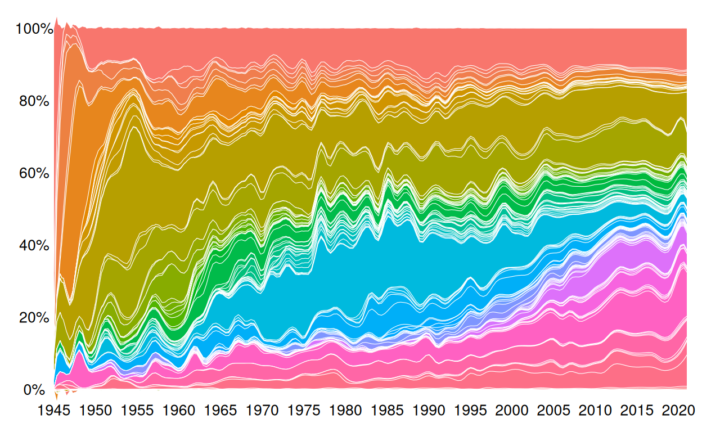
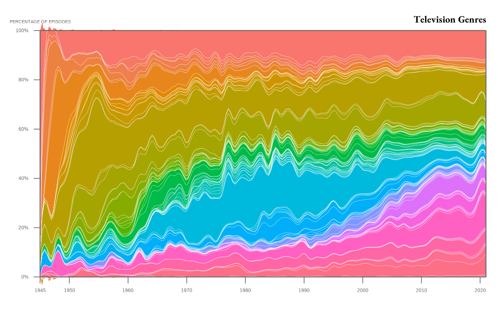
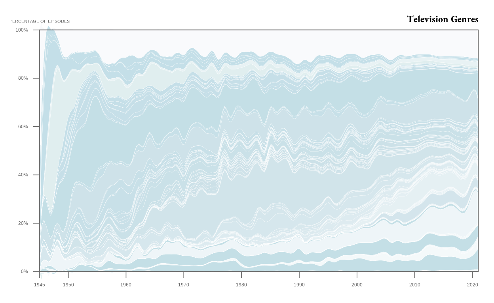
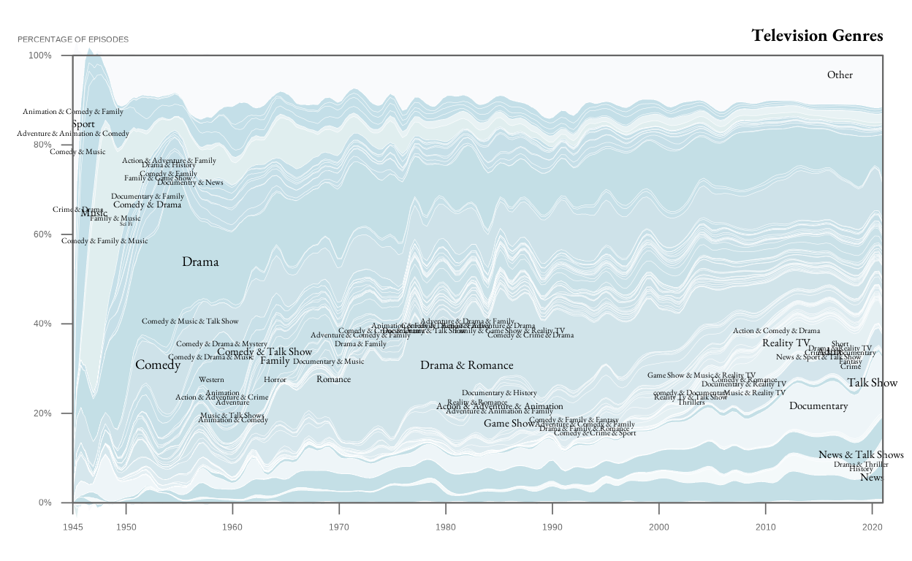

PART 1 - REPLICATION
Data gathering and preprocessing
The data was gathered from the blog this plot was taken from. The blog is called ‘Flowing Data’ and it is managed by one person who shares different graphs he enjoys making, on a multitude of different topics. The one I chose is a stacked area chart regarding the distribution of TV genres over time. The reason I chose it is because I like the colors and the shape, which then - in a funny turn of events - were the steps I had the most difficulty in. To gather the data, I emailed the blog owner asking him for the dataset, and he was very kind in providing me with the section on the IMdb website where tsv files containing the data were available.
In order to create the graph, I will try to first pre process the data to clean it and to make sure that all the information I need are available and ready to use.
The y axis in the original visualization is in percentages, so I will turn each value in the distribution of genres over time as a percentage.
genres_time <- read_tsv("genrecnts_time.tsv")
genres_time <- genres_time |>
mutate(across(where(is.numeric), ~ 100 * .x / sum(.x))) |>
rename_with(~ str_remove(.x, "^y"), starts_with("y"))
genres_time <- genres_time |>
pivot_longer(cols = -genre,
names_to = "year",
values_to = "percentage")
genres_time <- genres_time |>
mutate(year = as.integer(year))After this first cleaning and pre processing step, I need to order the data according to the latest peaks, which will be used to recreate the graph.
For my area plot to follow the peaks’ order, I will create a data set with each year’s peaks and their percentages. Finally, I will add ‘other’ as the category with the highest peak, so that it will be plotted as the top layer as it is portrayed in the original visualization.
peaks <- genres_time |>
group_by(genre) |>
slice_max(percentage, n = 1, with_ties = FALSE) |>
ungroup() |>
select(genre, peak_year = year)
peaks <- peaks |>
mutate(peak_year = if_else(genre == "Other", 0, peak_year)) |>
arrange(desc(peak_year))
ordered_genres <- peaks$genre
genres_time <- genres_time |>
mutate(genre = factor(genre, levels = rev(ordered_genres)))Replication of the graph
Now I can actually start to work on the graph’reproduction. I will start with a simple stacked area chart to see if the data is well pre processed, if the peaks are well developed and correspond to the original visualization. Although this is an initial simple graph, some simple specificities were added in order to already gain a somewhat well rounded version of Flowdata’s graph. For example, the white lines between each layer were implemented from this very first rendition, and the graph’s extension was manually implemented.
ggplot(genres_time, aes(x = year, y = percentage, fill = genre, group = genre)) +
geom_area(position = "stack", alpha = 0.8, color = "white", size = 0.1) +
scale_y_continuous(
labels = function(x) paste0(x, "%"),
breaks = seq(0, 100, 20),
expand = c(0, 0)
) +
scale_x_continuous(
breaks = seq(1945, 2020, 10),
expand = c(0, 0)
) +
theme_void() +
theme(
axis.text.x = element_text(size = 10),
axis.text.y = element_text(size = 10),
legend.position = "none",
plot.margin = margin(10, 10, 10, 10)
)
From this first rudimental version of the area chart, what comes to mind is the sharp lines that define each layer, which are very different from the original area chart that I aim to reproduce. The lines, in the original version, are very smooth, creating almost wave-like shapes, instead of the sharp spikes that are default in a stacked area chart. My first approach was to use typr = ‘ridge’ through ggstream, as seen in class. This attempt did not improve the lines because the smoothness that it applied to the lines was not as strong as in the original version.
Therefore, I tried to directly smooth the data since smoothing the lines did not work. My second attempt was to apply a local polynomial regression adjusting the span to the highest possible value - I tried up to span = 0.3, but it was not working. The smoothness was never quite right, and the areas’ shape always ended up looking uneven.
After some research and some help from Gemini, I was able to achieve my goal through the spline function. SPLINE FUNCTION (from R documentation): Perform cubic (or Hermite) spline interpolation of given data points, returning either a list of points obtained by the interpolation or a function performing the interpolation. Basically it draws a smooth curve through your the data and calculates what the percentage would be at each new point. It draws curves, which allowed my graph to look smoother and much more similar to the original one.
genres_time_smooth <- genres_time |>
group_by(genre) |>
arrange(year) |>
reframe(
year_interp = seq(min(year), max(year), length.out = 200),
percentage_interp = spline(year, percentage, xout = seq(min(year), max(year), length.out = 200))$y
) |>
ungroup() |>
mutate(genre = factor(genre, levels = levels(genres_time$genre)))
genres_time_smooth <- genres_time_smooth |>
mutate(percentage_interp = pmin(percentage_interp, 100))
ggplot(genres_time_smooth, aes(x = year_interp, y = percentage_interp, fill = genre)) +
geom_area(color = "white", size = 0.2) +
scale_y_continuous(
labels = function(x) paste0(x, "%"),
breaks = seq(0, 100, 20),
expand = c(0, 0)
) +
scale_x_continuous(
breaks = seq(1945, 2020, 5),
expand = c(0, 0)
) +
theme_void() +
theme(
axis.text.x = element_text(size = 10),
axis.text.y = element_text(size = 10),
legend.position = "none",
plot.margin = margin(10, 10, 10, 10))
The further step I took in order to improve my replication was working on the axis. The x axis needs to have a jump from 1945 to 1950, and from then onwards to be marked every 10 years. In order for it work, I manually adjusted them. The y axis was easier to manage because it has percentages, marked every 20%.
The axis’s ticks in the original graph float, and I tried many different ways to make them float, also asking AI tools, but the answer I got was finally on Reddit, and it was as simple as - you can’t. I found out that, with ggplot, it is really complex to make the axis float, since it is not a function that the package allows for easily. Therefore, for the sake of time and for my mental health, I decided to give up and focus on elements I could actually work on.
During this step I also adjusted the font to apply to annotations and to the title, which was taken from Google. Now that my graph started to feel more complete and getting closer to the original visualization, I saved it as a ‘p’ object to have it as a structured base to then build upon.
library(showtext)
font_add_google("EB Garamond", "eb-garamond")
showtext_auto()
p <- ggplot(genres_time_smooth, aes(x = year_interp, y = percentage_interp, fill = genre)) +
geom_area(color = "white", size = 0.1) +
scale_y_continuous(
labels = function(x) paste0(x, "%"),
breaks = seq(0, 100, 20),
expand = c(0, 0),
position = "left"
) +
scale_x_continuous(
breaks = c(1945, 1950, 1960, 1970, 1980, 1990, 2000, 2010, 2020),
expand = c(0, 0)
) +
coord_cartesian(ylim = c(0, 100), clip = "off") +
labs(
title = "Television Genres"
) +
theme_minimal() +
theme(
text = element_text(family = "sans"),
panel.border = element_rect(color = "grey40", fill = NA, size = 0.4),
panel.grid = element_blank(),
plot.title = element_text(family = "eb-garamond", size = 18, face = "bold", hjust = 1, margin = margin(b = 5)),
axis.text.x = element_text(size = 9, color = "grey40", margin = margin(t = 8)),
axis.text.y = element_text(size = 9, color = "grey40", margin = margin(r = 8)),
axis.line = element_blank(),
axis.title = element_blank(),
axis.ticks = element_line(color = "grey40", linewidth = 0.3),
axis.ticks.length = unit(6, "pt"),
legend.position = "none",
panel.background = element_rect(fill = "white", color = NA),
plot.background = element_rect(fill = "white", color = NA),
plot.margin = margin(15, 15, 15, 15))
p <- p +
annotate(
"text",
x = 1945,
y = 103,
label = "PERCENTAGE OF EPISODES",
hjust = 0.5,
vjust = 0,
size = 3,
family = "sans",
fontface = "plain",
color = "grey40"
)
p
Now this was one of the trickiest part of the graph’s recreation. The colors in the graph are very light and have very slightly different shades, creating a nice effect - although making it really hard to read the graph. There are many different shades of blue and light blue, some almost white. I tried to apply some pre-existing blue scales, hoping for a magical scale that would by chance be exactly the same as the one in the original graph. Of course, it didn’t exist. I therefore tried to manually pick all the shades through a color-picking tool, but after the first 10 shades I was going blind. Some layers are so thin that it was almost impossible to identify the color, and most of all their order.
To solve this issue I opted for a middle ground, which worked surprisingly (but not perfectly) well. A gradient scale with a range from darkest to lightest color identified in the graph was created. To replicate the graph as closely as possible, the thickest and most recognizable layers were identified with a color-picker tool and saved, to then be manually inserted within the graph.
ordered_genres <- levels(genres_time_smooth$genre)
ordered_blue_genres <- ordered_genres[ordered_genres != "Other"]
n_blue_genres <- length(ordered_blue_genres)
dark_blue <- "#c4dfe8"
mid_blue <- "#cee2e9"
light_blue <- "#f7fbfc"
blue_function <- colorRampPalette(c(dark_blue, mid_blue, light_blue))
gradient_colors <- blue_function(n_blue_genres)
full_palette <- gradient_colors
names(full_palette) <- ordered_blue_genres
full_palette["Other"] <- "#f9fafc"
full_palette[c("Animation & Comedy & Family",
"Sport", "Adventure & Animation & Comedy")] <- "#e8f2f4"
full_palette["Music"] <- "#e0eeef"
full_palette[c("Drama", "Talk Shows", "News", "Game Show",
"Crime", "Documentary")] <- "#c4dfe6"
full_palette[c("Drama & Romance", "Comedy")] <- "#cee2e9"
full_palette[c("Reality TV", "Adult")] <- "#d4e5ec"
p <- p +
scale_fill_manual(values = full_palette)
p
The final step to complete the replication was to add labels. In the original visualization the labels were placed in very specific spots, with different sizes and placed in groups in different part of the graph.
To place them as closely as possible to the original graph, the main labels were manually input by looking at the blog’s visualization and by placing them according to their approximate position on the x and y axis. To achieve this, four vectors were created (labels, x coordinates, y coordinates and size), which were then annotated. This was a very tedious step of the replication, and given the great amount of specificity and the quantity of the actual labels, I was not able to place all of them.
I manually placed around 70 labels, writing for each the position on the x and y axis and their size, attempting to make it look as close as possible to the original visualization.
labels <- c("Animation & Comedy & Family", "Adventure & Animation & Comedy", "Sport", "Comedy & Music", "Crime & Drama", "Action & Adventure & Family", "Drama & History", "Comedy & Family", "Family & Game Show", "Documentry & News", "Documentary & Family", "Comedy & Drama", "Music", "Family & Music", "Sci Fi", "Comedy & Family & Music", "Drama","Other", "Crime", "Fantasy", "Adult", "Reality TV", "Documentary", "Action & Comedy & Drama", "Talk Show", "News", "News & Talk Shows", "Drama & Romance", "Comedy", "Animation", "Action & Adventure & Crime", "Adventure", "Music & Talk Shows", "Animation & Comedy", "Documentary & History", "Reality & Romance", "Action & Adventure & Animation", "Adventure & Animation & Family", "Game Show", "Comedy & Music & Talk Show", "Comedy & Drama & Music", "Comedy & Drama & Mystery", "Comedy & Talk Show", "Family", "Horror", "Romance", "Western", "Documentary & Music", "Drama & Family", "Adventure & Comedy & Family", "Comedy & Crime & Drama", "Animation & Family", "Documentary & Talk Show", "Comedy & Drama & Fantasy", "Adventure & Drama & Family", "Action & Adventure & Drama", "Family & Game Show & Reality TV", "Comedy & Crime & Drama", "Comedy & Family & Fantasy", "Adventure & Comedy & Family", "Drama & Family & Romance","Comedy & Crime & Sport", "comedy & Documentary", "Reality Tv & Talk Show", "Thrillers", "Drama & Thriller", "History", "Short", "Drama & Reality TV", "Crime & Documentary", "News & Sport & Talk Show", "Music & Reality TV", "Documentary & Reality TV", "Comedy & Romance", "Game Show & Music & Reality TV")
x_coord <- c(1945, 1945, 1946, 1945.5, 1945.5, 1954, 1954, 1954, 1953, 1956, 1952, 1952, 1947, 1949, 1950, 1948, 1957, 2017, 2018, 2018, 2016, 2012, 2015, 2011, 2020, 2020, 2019, 1982, 1953, 1959, 1959, 1960, 1960, 1960, 1985, 1983, 1985, 1985, 1986, 1956, 1958, 1959, 1963, 1964, 1964, 1969.5, 1958, 1969, 1972, 1972, 1974, 1976, 1978, 1980, 1982, 1984, 1986, 1988, 1992, 1993, 1993, 1994, 2003, 2003, 2003, 2019, 2019, 2017, 2017, 2017, 2015, 2009, 2008, 2008, 2004)
y_coord <- c(87, 82, 84, 78, 65, 76, 75, 73, 72, 71, 68, 66, 64, 63, 62, 58, 53, 95, 30, 31, 33, 35, 21, 38, 26, 5, 10, 30, 30, 24, 23, 22, 19, 18, 24, 22, 21, 20, 17, 40, 32, 35, 33, 31, 27, 27, 27, 31, 35, 37, 38 ,39, 38, 39, 40, 39, 38, 37, 18, 17, 16, 15, 24, 23, 22, 8, 7, 35, 34, 33, 32, 24, 26, 27, 28)
size <- c(3, 3, 4, 3, 3, 3, 3, 3, 3, 3, 3, 3.5, 4, 3, 2, 3, 5, 4, 3, 3, 4, 4, 4, 3, 4.5, 4, 4, 4.5, 5,3, 3, 3, 3, 3, 3, 3, 3.5, 3, 4, 3, 3, 3, 4, 4, 3, 3.5, 3, 3, 3, 3, 3, 3, 3, 3, 3, 3, 3, 3, 3, 3, 3, 3, 3, 3, 3, 3, 3, 3, 3, 3, 3, 3, 3, 3, 3)
p <- p +
annotate(
"text",
x = x_coord,
y = y_coord,
label = labels,
hjust = 0.5,
vjust = 0,
size = size,
family = "eb-garamond",
color = "black"
)
p
PART 2 - IMPROVEMENT
One of the main reasons why I chose the stacked area chart from FlowingData’s blog is because I saw a lot of room for improvement. The original work is very messy and unclear. The lack of clear colors, the quantity of layers not well distinguishable, as well as the clustered labels hider the graph’s interpretability.
My initial plan was to re-create a stacked area chart with less layers and a different color scale. After different attempts, I decided to change approach because I felt like a simpler stacked area chart was not effective in showcasing the story of the evolution of TV genres over time. A graph like that, in my opinion, was not communicating the evolution to the viewer as much as it could. I wanted something more striking and effective.
I therefore opted for an animated line chart, so that the viewer could follow the TV genres’ evolution over time, in a more interactive way that would show change in a very active manner. By following the lines in the chart, changes can be seen throughout the years (still placed as ticks in the x-axis). In my opinion, the way in which the original chart was grouping the genres was very confusing, with small groups of random genres that contributed to the graph’s messiness (e.g. “Drama & Family & Romance or Comedy & Music & Talk Show). I changed approach and decided to reduce the labels, by creating bigger groups of more general genres. I believed that this was going to make the graph clearer and, while some information might be lost, at least the visualization would gain clarity, deeply missing in the original version.
I also decided to add a legend, so to give the viewers a guideline to understand the graph. As mentioned earlier, the original graph’s label placement was really hard to read, contributing to the visualization’s lack of clarity. By providing a simple legend inside the graph, hopefully the viewers will have a way to understand every line present within the chart and its corresponding genre.
A lot of thought and research was also given to the lines’ colors. A wrong color palette could strongly impact the graph’s readability, especially in a line chart. I scouted different color palette all throughout the Internet, ranging from colors related to national parks to palettes inspired by painters. I tried many different colors, but I then opted for manually inserting different colors until I was satisfied with how the graph looked overall and with the distinction between each line.
Animated line chart
Here is the code that I used in the new graph, where the genres are broader. The genres I settled upon are: Drama & Crime, Comedy & Family, Reality & Adult, Entertainment, Documentary, Sport and other.
library(stringr)
new_genres <- genres_time |>
mutate(
genres = case_when(
str_detect(genre, regex("Drama|Crime|Thriller|Action.*Drama|Adventure.*Drama", ignore_case = TRUE)) ~ "Drama & Crime",
str_detect(genre, regex("Comedy|Family|Animation", ignore_case = TRUE)) ~ "Comedy & Family",
str_detect(genre, regex("Reality|Adult", ignore_case = TRUE)) ~ "Reality & Adult",
str_detect(genre, regex("Talk Show|Game Show", ignore_case = TRUE)) ~ "Entertainment",
str_detect(genre, regex("^News$|News &", ignore_case = TRUE)) ~ "News",
str_detect(genre, regex("Documentary|Documentry", ignore_case = TRUE)) ~ "Documentary",
str_detect(genre, regex("Sport", ignore_case = TRUE)) ~ "Sport",
TRUE ~ "Other"
)) |>
group_by(year, genres) |>
summarise(percentage = sum(percentage), .groups = 'drop') |>
mutate(genres = factor(genres,
levels = c("Other", "Sport", "News", "Documentary",
"Entertainment", "Reality & Adult",
"Comedy & Family", "Drama & Crime")))Here is the animated line chart.
color_palette <- c("#006d2c", "#F77F00", "#FCBF49" , "#4eb3d3",
"#00008B", "#9D4EDD", "#FF006E")
p3 <- ggplot(new_genres, aes(x = year, y = percentage,
group = genres, color = genres)) +
geom_line(linewidth = 1.2) +
geom_point(size = 2) +
scale_color_manual(values = color_palette, name = "Genres") +
scale_y_continuous(
name = "Percentage of Episodes",
labels = function(x) paste0(x, "%"),
breaks = seq(0, 100, 20),
expand = c(0, 0),
position = "left"
) +
scale_x_continuous(
name = "Year",
breaks = seq(1950, 2020, 10),
expand = c(0, 0)
) +
coord_cartesian(ylim = c(0, 100), clip = "off") +
labs(
title = "The Evolution of Television Genres over the Years",
subtitle = "Year: {frame_along}"
) +
theme_minimal() +
theme(
text = element_text(family = "sans"),
panel.border = element_rect(color = "grey40", fill = NA, size = 0.4),
panel.grid = element_blank(),
plot.title = element_text(family = "eb-garamond", size = 16, face = "bold", hjust = 0.5, margin = margin(b = 5)),
panel.background = element_rect(fill = "white", color = NA),
plot.background = element_rect(fill = "white", color = NA))
p3 <- p3 + theme(
legend.position = "inside",
legend.position.inside = c(0.95, 0.95),
legend.justification = c("right", "top"),
legend.title = element_text(family = "eb-garamond", face = "bold", size = 13,
margin = margin(b = 8)),
legend.text = element_text(family = "eb-garamond", size = 12, margin = margin(l = 5)),
legend.key = element_rect(color = "white", size = 0.5),
legend.key.size = unit(0.5, "cm"),
legend.spacing.y = unit(0.3, "cm"),
legend.background = element_rect(fill = alpha("white", 0.6), size = 0.3),
legend.margin = margin(10, 10, 10, 10),
axis.text.x = element_text(size = 9, color = "black", margin = margin(t = 8)),
axis.text.y = element_text(size = 9, color = "black", margin = margin(r = 8)),
axis.ticks.x = element_line(color = "black", linewidth = 0.3),
axis.ticks.length.x = unit(6, "pt"),
axis.line = element_blank(),
plot.margin = margin(15, 15, 15, 15))
p3 <- p3 + transition_reveal(year)
animate(p3, nframes = 200, fps = 20, width = 900, height = 600, units = "px", res = 100)
In conclusion, I believe that this animated line chart is clearer and conveys more information to the viewer even if, paradoxically, it has less data than the original work. In my opinion, the first graph was so messy and full of information that it was hard to get anything out of it at all. By simplifying the data and focusing on what I wanted it to represent, it became easier to understand and to actually perceive its intent: to showcase the evolution of TV genres over time.